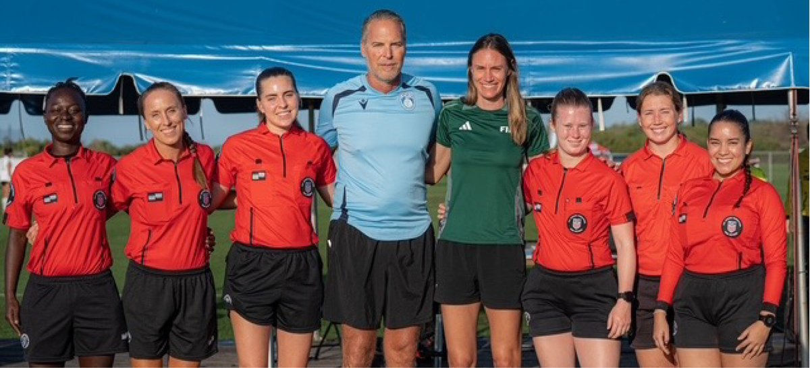
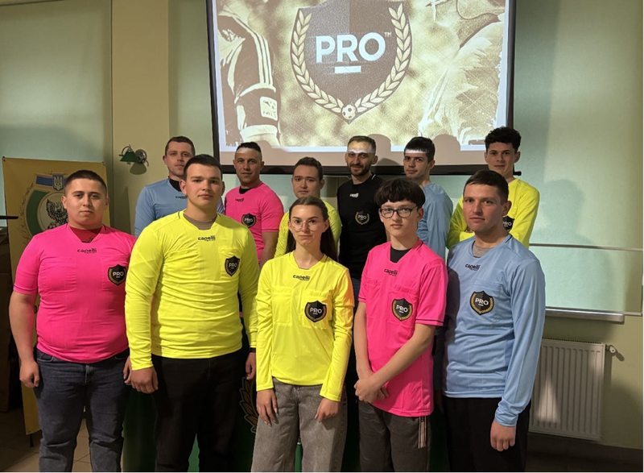
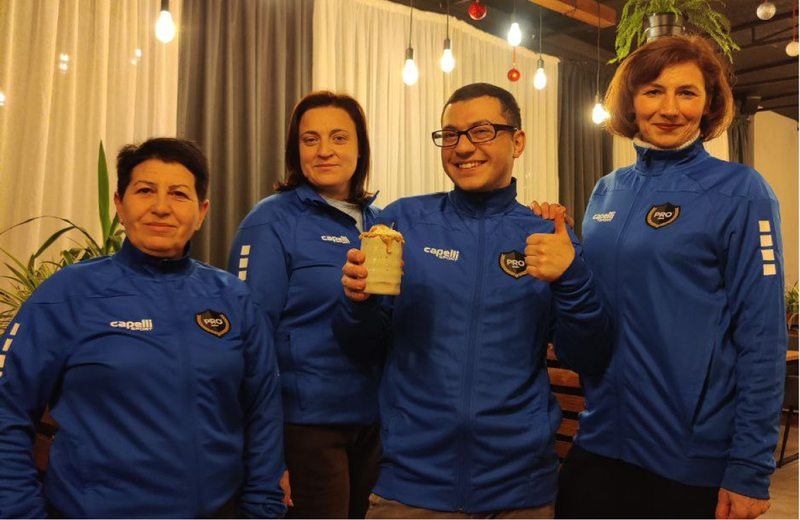
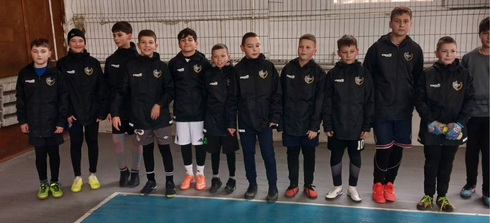

Each May at PSRA, we focus on and remember Huntington’s disease awareness. For those of you who didn’t know our now-passed brother and colleague, Terry Vaughn, I wanted to take a minute to reflect.
Terry passed away a few years ago from HD. This terrible disease took Terry from working the MLS playoffs to being unable to stand in a matter of years. But no matter what happened with Terry’s physical abilities, his heart and support for his family and refereeing friends never changed.
Like several of you, I worked with Terry on some really challenging MLS and international matches. What I will remember most about those matches, however, is the smile and hug that went around the locker room post-match.
As each of us was coming up through lower-level refereeing, one of the reasons we might have stayed in the game after a rough patch was the friends and really cool people we worked with along the way. Terry was one of the best.
I encourage each Member to honor Terry and learn about HD in your own way — something as simple as putting your phone in a drawer and challenging your refereeing brother or sister to a game of ping pong in the hotel (while wearing a blue wristband). From this, you might come to make a true friend for every future step in life.
Check out our message on HD on social media.
For Terry and for his spirit of teamwork that lives on –
Through Unity, Strength.
Peter Manikowski


Nominations & Voting Committee: The NVC administered one vote that emanated from the General Membership Meeting in January. No other committee activity occurred this quarter.
Issues & Grievances Committee: Processed three grievances. Continued to take member questions on all CBA items (both Units). Continued advising Board on CBA issues and member inquiries. Always open to questions and hypothetical scenarios!
New Member Committee: In Q1 2026, PSRA admitted 2 new members to the Association.
Media Committee: In Q1, the media committee Begin working on content for the remainder of the year at preseason camp and beyond. We thank those who participated. Looking forward, we plan on keeping an updated list of games that our members are working at the World Cup on our social media channels for easy reference. We hope this is an easy bookmark you can use to see when your peers are working.
Medical Committee: Continued assisting members with questions related to PRO medical.
Financial Planning Committee: No update this quarter.
BU2 Negotiating Committee:
- Surveyed the membership for bargaining priorities.
- Worked with Attorney Lucas Middlebrook on strategy and presentation of bargaining sessions.
- Began negotiations in April with another session in May. Scheduled to meet again in early June.

Both the BU1 and BU2 contracts provide a monthly tech stipend to account for using personal devices for PRO work.
The BU1 stipend for ARs, VARs, and AVARs is $27.55 a month in 2026. All BU2 Officials are all eligible for their stipend of $27.32 a month.
These stipends should be submitted monthly via Emburse, and can be included on an expense report with a match for simplicity. A receipt is not required. If the system asks for a receipt, just enter “Personal tech stipend” in the text box.

We’re shining the spotlight on one of our Kansas City colleagues whose journey to the professional ranks is rooted in passion, perspective, and a whole lot of humility. Get to know the person behind the badge.
Q: Where are you from?
A: Kansas City, Kansas, and I’m still based there. It’s home. You’ve got kind people, incredible BBQ, and some really cool attractions like the National WWI Museum, the Negro Leagues Baseball Museum, and the National Jazz Museum.
And I’ll say it loud: the best BBQ is at Q39. Best burnt ends in the country. I’ve tried Texas and North Carolina. Kansas City wins. [Editor’s Note: The views expressed by Drew Klemp do not necessarily reflect the views of PSRA or its Membership.]
Q: What was your first professional match, and what stood out to you?
A: June 2021, an NWSL match in Kansas City, about 10 minutes from the house where I grew up. My whole family came out. That part meant everything. The match itself was smooth, but what I remember most is working alongside veteran officials who had supported me for years.
Q: What is something you take seriously every single match without exception?
A: I pray. Every match, and usually during the national anthem. It’s my time to recenter and prepare for the decisions ahead. No matter the level, that moment is non-negotiable for me.
Q: What’s one lesson the game has taught you that applies off the field?
A: Accountability and humility. There’s this perception that referees won’t admit mistakes. I’m the opposite, sometimes to a fault. If I get something wrong, I want to own it. I’ve done that in matches, and I’ve done it after reviewing film. You have to learn from it and move forward.
Q: What do you do when you’re not wearing the badge?
A: I’m a physical therapist. I’m in the clinic Monday through Friday, seeing about 12 patients a day. Then I hop on a plane for my “soccer nightlife.” My patients love hearing the stories.
Q: What’s the #1 thing your patients ask you?
A: “How do you deal with everyone yelling at you?” Honestly, there’s no simple answer. Over time, you learn what’s frustration versus what’s personal. Most of the time, it’s not personal. It comes with the badge.
Q: Pre-match, do you prefer music or silence?
A: Music and conversation, all the way. I’m smiles, good vibes, and 2010s pop. If someone else needs silence, that’s cool — but I’m bringing the energy.
Q: What excites you most about being a member of PSRA?
A: The unity. Even with people I’ve just met, there’s a shared connection. Everyone’s engaged, whether it’s social media, emails, or committees. I was working under PRO for a few years before joining the bargaining unit, and honestly, it was advice from Chris Penso over dinner that pushed me to make the jump. He said it’s about supporting your fellow officials, and he was right.
Q: Anyone you want to shout out?
A: Absolutely. Brian Marshall and Matt Rodman have been huge resources — I ask them questions all the time. And big shoutout to Jon Freeman and Kyle Atkins — great friends, mentors, and advocates as I’ve worked my way up. Kansas City has a tight group. We get together every few weeks, grab a drink, stay connected. That community means everything.
Alex Billeter with Florida Soccer Referees Women’s Academy
PSRA Member and FIFA Official Alex Billeter (in green) is helping identify and train referees who wish to advance through her leadership of the Florida Soccer Referees Women’s Academy. Thank you, Alex, for all you do for the future of the game!

PSRA Making a Difference for Officials in Ukraine
Led by Sergii Boiko, PSRA Members came together to donate much-needed officiating gear for soccer officials in Ukraine. The donations were gratefully received and are already being utilized by officials working matches under incredibly challenging circumstances. This effort reflects the strength of the global officiating community and PSRA’s commitment to supporting fellow officials both on and off the field.



- HD Awareness in May: Wear your blue H.D. wristbands proudly!
- Post-World Cup assignments for MLS: will come out starting June 23.
- Reminder: Block your time for June and July now if you’re taking time off.

Send yours to media@psraofficials.org – we want to feature you on our social channels.
Thank you,
PSRA